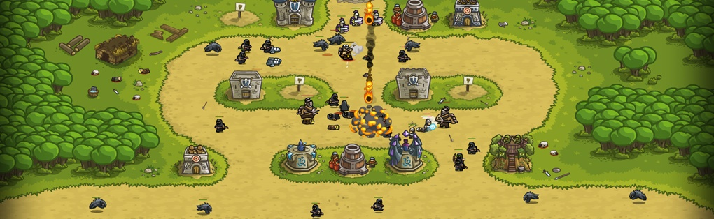

5 Best Browser Games Everybody Should Play
You know you can't be focused all the time, so treat yourselves to these best browser games.
You are not doing any work today. You are not, or you would not be here, looking for a selection of games that are easily hidden behind a spreadsheet when You-Know-The-Person hovers over your desktop. It's good, you're friends - that's why this list is there to make sure you have the knowledge of the best browser games to procrastinate with. From crazy mini-golf to biting tower defense, here are the browser games that will give you a well-deserved break.
Browser games require no client software or anything to install. Some love it and are hardcore gamers, for others it could be a great way to defuse tension and discourage the mind. No worries - all you need is to open a web browser (some may require a browser plugin / add-on or a Flash player) and play whatever you want with friends or just people from the net. A game of billiards or a car race, generally free, browser games are worth it.
1. Quick, Draw
Could we teach Skynet how to doodle? That’s the aim of Quick, Draw, a sort of online Pictionary where every sketch made by players is stowed away and analysed by a neural network to help with machine learning. You have 20 seconds to draw a randomised set of everyday objects - think frying pans, benches, shoes and the like - while an AI voice tries to guess what you’re scribbling. Once you’ve done six drawings you can scroll through what other people around the world drew, and feel either smug or ashamed depending on how good you are at drawing, say, a potato.
2. Kingdom Rush
The tower defense genre was starting to get obsolete until Kingdom Rush arrived and shined it with the right pin and the right polish. Four basic tower types are perfectly balanced and allow you to eliminate enemies with archers, soldiers, mages and artillery. The levels are sprinkled with predetermined empty spaces called "Strategy Points" that you can choose from. The towers can be improved on these points with money earned by shooting down enemies - so far so simple. But it's this simple design that makes Kingdom Rush so brilliant. There are no bells or whistles to hide behind, just perfectly executed levels that look stunning, with delightfully cartoony graphics and elegant enemies. It is an essential game for tower defense enthusiasts.
3. Astro Lords
If you are a connoisseur of science fiction and city building (in this case, building bases), you will love this browser game just like we did. Great gameplay, excellent soundtrack, special combat system ... everything really settles down. It's a space MMO, you could say, quite diverse: it encompasses science, construction, management, hacking, etc.
You can send spies to asteroids and hire up to 6 captains. Each of them belongs to one of the seven classes with different skills and type of spaceship. For example, a scientist to delve into smart lab stuff, a manufacturer to produce things, a cyborg to generate more cyborgs. The technological tree is nicely developed.
Start with simple constructions to reach the more advanced ones. Be aware that asteroids are not static, they can also move and you can colonize empty asteroids. In some games, massive player-to-player (PvP) battles take place, and you won't want to miss them.
4. Alter Ego
Alter Ego isn’t pretty – visually or in terms of content. This remake of an ancient PC game deals with progress through everyday life. Rather than cute little Sims-style idiots blundering about, you get stark icons and multiple-choice text, but there’s real depth, with a clever (if admittedly slightly conservative) script written by a psychologist, which offers branching progress that could lead you to a happy old age or abruptly dying as a toddler, having necked some bleach found under the sink.
5. Contre Jour
Originally a success on mobile, Contre Jour loses a bit of its tactile qualities and its immediacy in the browser - but nothing of its charm. The objective is to guide the small cycloptic drop towards the exit in each single screen level, by manipulating the local environment to do this. You deform the ground to make it roll, you balance Petit via elastic cords and you catapult it across the screen (and, often, in painful points) using tiny trampolines.